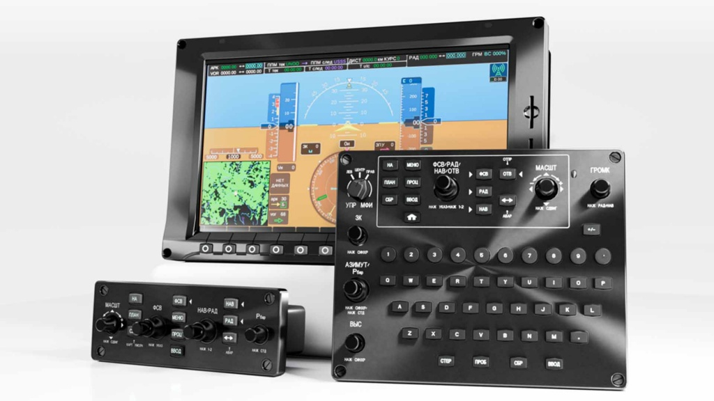
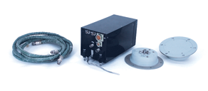
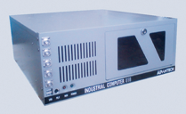
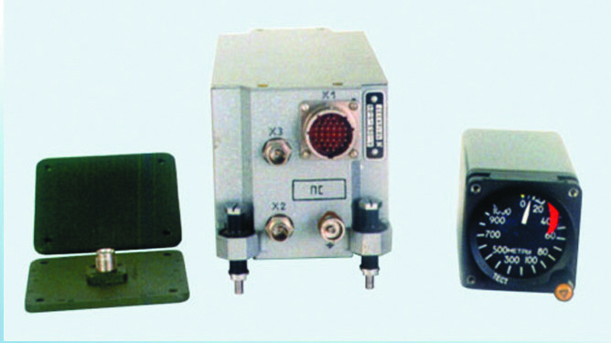
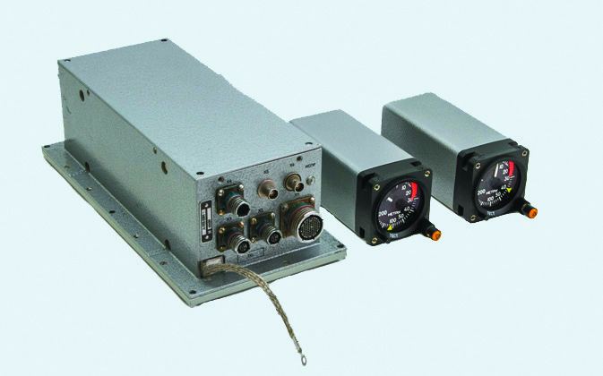
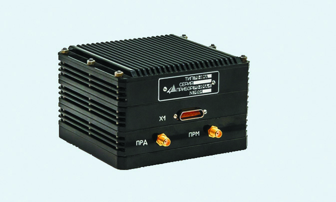

ИКБО «АВИАТОР»

ИКБО «АВИАТОР» - АВИОНИКА ДЛЯ ВОЗДУШНЫХ СУДОВ НАШЕГО ВРЕМЕНИ
Исполнение интегрированных комплексов бортового оборудования, разработанных для различных типов воздушных судов местных воздушных линий.
Наши решения сочетают классический подход технологий, универсальность и надежность, обеспечивая безупречную работу экипажа и управление полетом.
Малогабаритный авиационный радиовысотомер А-098

Радиовысотомер А-098 является бортовой радиолокационной станцией с импульсным излучением радиоволн.
Он имеет малые габариты и массу, высокую надежность и достоверность выдаваемой информации.
Предназначен для пилотируемых летательных аппаратов, но может быть установлен на любой тип летательных аппаратов.
Имитатор отражённых сигналов ИОС-РВ

Имитатор отражённых сигналов (ИОС) предназначен для имитации временной задержки и ослабления излученного СВЧ сигнала радиовысотомера в соответствии с
заданными параметрами антенной системы, высотой полёта, типом подстилающей поверхности, углами крена и тангажа, скоростью летательного аппарата.
Может применяться в комплексах полунатурного моделирования систем БРЭО летательного аппарата.
Малогабаритный авиационный радиовысотомер А-053М

Радиовысотомер А-053М является бортовой радиолокационной станцией с непрерывным излучением частотно-модулированных радиоволн.
Имеет малые габариты и массу, высокую надежность и достоверность выдаваемой информации.
Конструкция приемопередатчика позволяет установку без амортизации на борт летательного аппарата.
Малогабаритный авиационный радиовысотомер А-052-28М

Радиовысотомер А-052-28М является бортовой радиолокационной станцией с непрерывным излучением частотно-модулированных волн. Имеет малые габариты и массу,
высокую надежность и достоверность выдаваемой информации.
Радиовысотомер РВ-ИМА

Радиовысотомер РВ-ИМА (Траверз-К) является бортовой радиолокационной станцией с непрерывным излучением частотно-модулированных радилволн.
Имеет малые габариты и массу, высокую надежность и достоверность выдаваемой информации.
Конструкция приемопередатчика позволяет установку без амортизации на борт летательного аппарата.
Предназначен для применения на БПЛА, легкомоторной авиации, может быть установлен на авиации общего назначения.